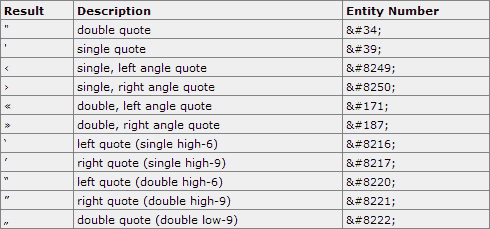

CSS quotes 属性
定义和用法
quotes 属性设置嵌套引用（embedded quotation）的引号类型。
| 默认值： | not specified |
|---|---|
| 继承性： | yes |
| 版本： | CSS2 |
| JavaScript 语法： | object.style.quotes="none" |
实例
q:lang(en)
{
quotes: '"' '"' "'" "'";
}
HTML 代码：
<html lang="en"> <head> </head> <body> <p><q>This is a <q>big</q> quote</q></p> </body> </html>
输出：
"This is a 'big' quote"
浏览器支持
所有浏览器都支持 quotes 属性。
注释：如果已规定 !DOCTYPE，那么 Internet Explorer 8 （以及更高版本）支持 quotes 属性。
可能的值
| 值 | 描述 |
|---|---|
| none | 规定 "content" 属性的 "open-quote" 和 "close-quote" 的值不会产生任何引号。 |
| string string string string |
定义要使用的引号。 前两个值规定第一级引用嵌套，后两个值规定下一级引号嵌套。 |
| inherit | 规定应该从父元素继承 quotes 属性的值。 |
引号字符
相关页面
HTML DOM 参考手册：quotes 属性